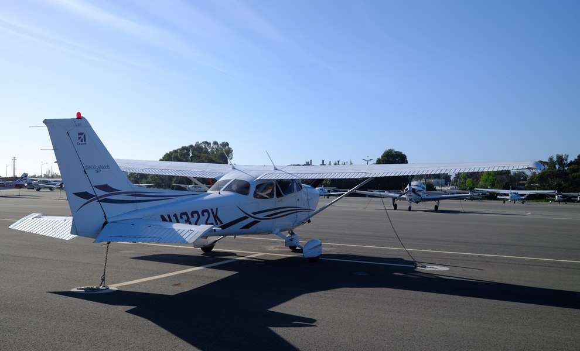
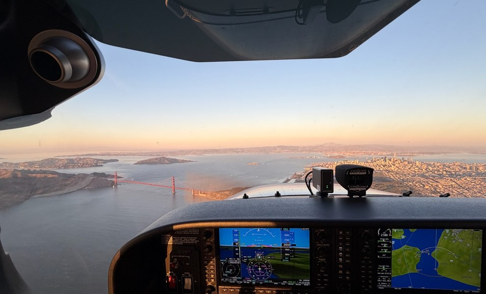
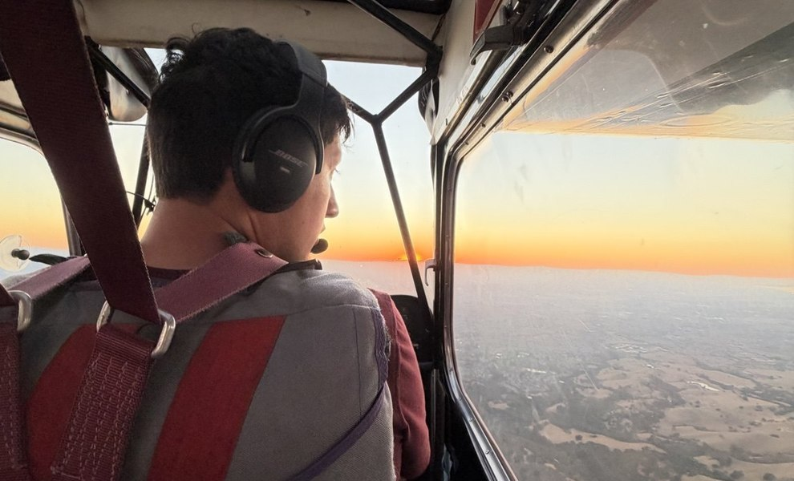

Ben Shepard
Certified Flight Instructor · Instrument Rated · AGI/IGI · Tailwheel · Aerobatics


Hi, I’m Ben.
I’m a pilot and aspiring flight instructor based in the San Francisco Bay Area. I’m passionate about aviation, teaching, and helping students build skills and confidence through a thoughtful, process-driven approach.
I believe good flying starts on the ground — with preparation, curiosity, and a clear understanding of the “why” behind what we do. My goal is to help you become a safe, proficient, and independent pilot, not just pass a checkride, but to develop the judgment and experience that will serve you for a lifetime of flying.

Private Pilot ↗
Build a strong foundation and the skills for a lifetime of flying. Learn in a supportive, structured environment tailored to your goals.

Commercial Pilot ↗
Develop advanced skills, experience, and aeronautical decision-making for the next step in your aviation journey.

Flight Reviews & Ground ↗
Stay current, sharpen your skills, and deepen your understanding through customized flight reviews and ground instruction.
The process comes first.
A checkride matters, but it isn't the whole point. My approach is to focus on what's in front of us: prepare well, understand the why, practice with intention, and keep raising the bar as confidence grows. When you build real proficiency, the result takes care of itself.
More about my approach ↗“The goal isn't just to pass a checkride. It's to walk away a more capable, confident pilot — and someone who's learned to take pride in the process.”
Keep learning between flights.
The best progress doesn't happen only in the airplane. Find FAA references and practical study materials to build your understanding between lessons.